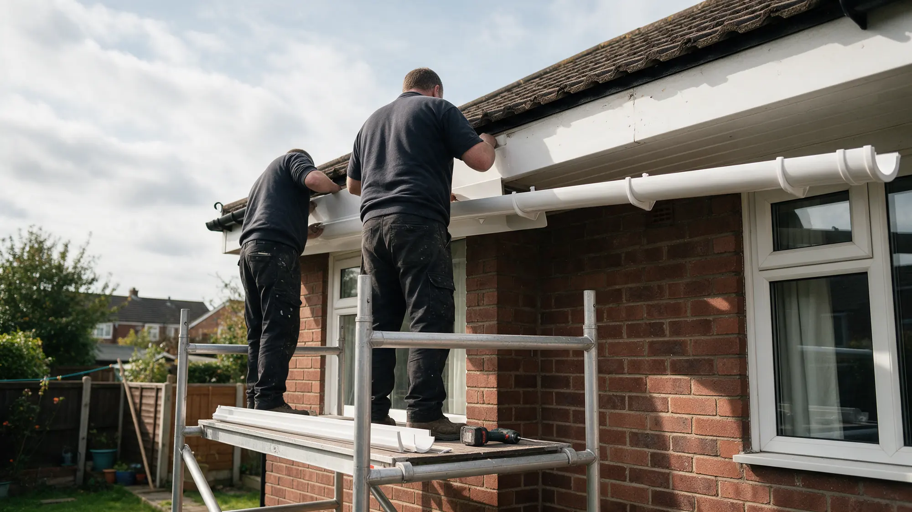
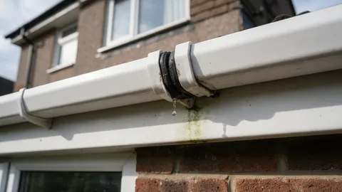
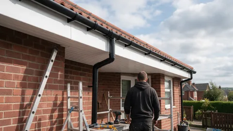
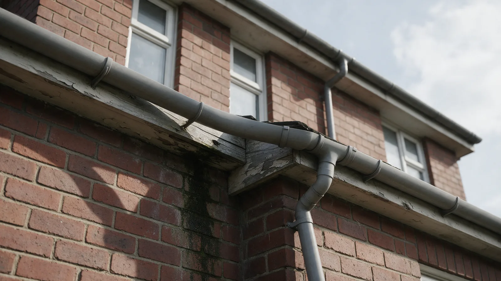
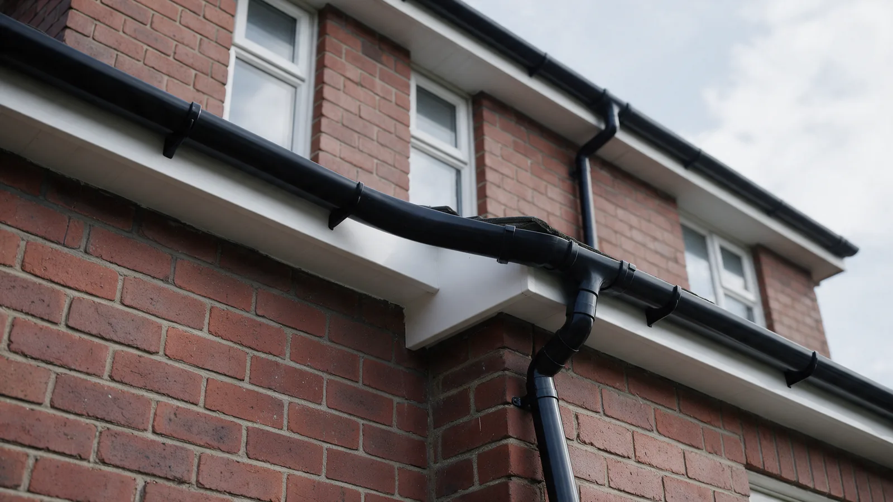
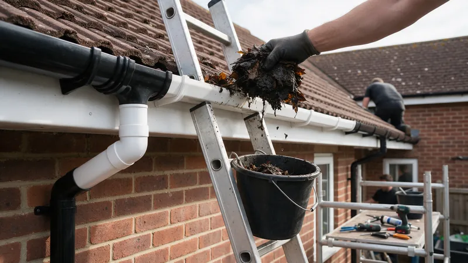
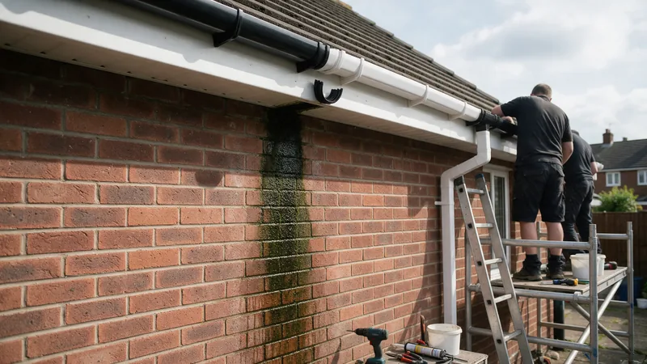
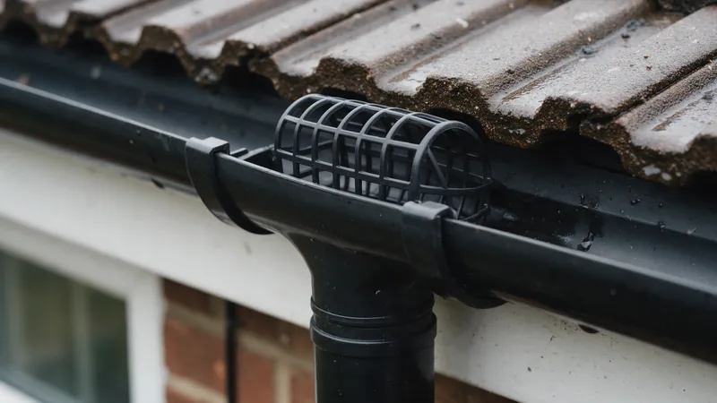
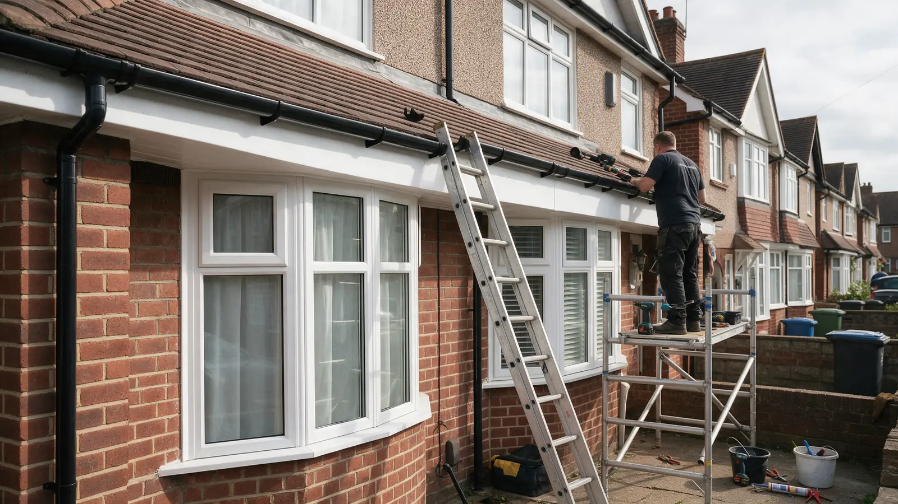
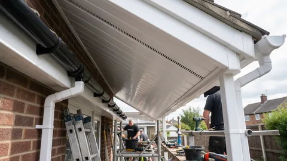

Gutters, fascias and roofline · Blackburn and the Ribble Valley
Where the water
is meant to go.
Gutter cleaning and repairs, fascias, soffits, cladding, bargeboards, downpipes and full uPVC roofline. Most of what goes wrong up there is a small job found early, and we will say so when it is.
Gutter profiles
Four shapes, drawn not photographed.
Half round
The ordinary one on most houses. Easy to clean, easy to get hold of, holds the least water of the four.
Ogee
Moulded front, flat back against the fascia. Holds more in the same width, which is often the answer where a run goes over.
Square
Straight lines, suits a newer house. Corners collect silt a little more readily than a round profile does.
Deep flow
A bigger half round for a lot of roof. Where two roofs run into one gutter, this is usually the honest fix.
Profiles drawn in the browser rather than photographed, so nothing here is pretending to be a product you can order.
What we do
Six kinds of job.
 Generated photo
Generated photoGutter cleaning
Cleared out by hand from the top down, the outlet checked, the downpipe run through and the muck taken away rather than tipped in your border.

Generated photoGutter repairs and replacement
A dripping joint, a dropped bracket, a run that holds water in the middle. Most of it is a length and a seal rather than the whole set.

Generated photoFascias and soffits
The board the gutter hangs off and the board underneath it. Old timber comes off, the roof edge gets looked at, and the vents go back in.
 Generated photo
Generated photoCladding and bargeboards
The sloping boards up the gable and the panels nobody can paint safely any more. Done while the access is already up, not next year.
 Generated photo
Generated photoDownpipes
Clips into the mortar, a swan neck that actually clears the eaves, and the bottom going into a gully rather than on to the path.
 Generated photo
Generated photoRoofline replacement in uPVC
Fascia, soffit, gutter, bargeboard and the gable, all changed together in one go. One set of access, one mess, one finish.
How it works
Four steps, no doorstep deal.
You tell us what you can see
A call, the chat box or the form. Which side of the house, whether it is dripping or pouring, and whether there is a stain on the wall under it. That is usually enough to know what we are looking at.
Somebody comes and looks up
Which runs hold water, where the stains are, whether the brackets have dropped, what the timber is doing where we can see it, and how we would get to it safely. Twenty minutes, usually.
You get it in writing, run by run
What is being cleaned, what is being replaced, what is being left alone and why, and whether a tower or a scaffold is part of it. Separate lines, so you can hold it against anybody else's.
We do it and clear up
Muck bagged and taken away rather than tipped in the border, old board off the drive, and the wall washed down where it has been stained Sample.


Illustrative, not a real job. Both pictures were generated for this demo from the same house, once tired and once done, so the brickwork, the window head and the tile edge are the same in each.
Before and after
The stain tells you where to look.
Drag the slider. On the left, a sagging gutter, a fascia board that has been painted over three times too many, and a dark green run down the brickwork. On the right, the same eaves done.
Look at where the stain is. Not along the whole wall, but in one strip under one spot. That is water leaving the run in a single place, which means a joint, a dropped bracket or a blockage sat at the outlet rather than a gutter that has had its day. It is the difference between half a morning and a full roofline, and the only way to know which is to look up at it.
See the rest of the workOur work
Sample jobs.
 Generated photoNew fascia going on at the eavesClitheroe Sample
Generated photoNew fascia going on at the eavesClitheroe Sample Generated photoThe lot done in one goGreat Harwood Sample
Generated photoThe lot done in one goGreat Harwood Sample Generated photoBlack gutter on white boardWhalley Sample
Generated photoBlack gutter on white boardWhalley Sample Generated photoGable faced in shiplapLongridge Sample
Generated photoGable faced in shiplapLongridge Sample Generated photoBargeboard up the vergeRibchester Sample
Generated photoBargeboard up the vergeRibchester Sample
Generated photoWhat came out of forty feetWhalley Sample
Generated photoA stain that shows the jointClitheroe Sample Generated photoThe seal, not the gutterGreat Harwood Sample
Generated photoThe seal, not the gutterGreat Harwood Sample Generated photoString line, then bracketsLongridge Sample
Generated photoString line, then bracketsLongridge Sample Generated photoSwan neck and new clipsClitheroe Sample
Generated photoSwan neck and new clipsClitheroe Sample
Generated photoA cage in the outletRibchester Sample Generated photoPipe off the wallLongridge Sample
Generated photoPipe off the wallLongridge SampleEvery job here is a made up sample with a generated picture. Tap one to see it bigger.
Where we work
Blackburn and the Ribble Valley.
Based in Blackburn and the Ribble Valley Sample. These are the towns we cover most. Coverage is a sample for this demo. A bit outside it? Ask anyway, it depends what else is on that week.

Generated photoWhat people say
Sample reviews.
Sample review
Had three firms tell me I needed the whole lot replacing. These told me two lengths and a seal, did it in a morning, and said the rest had years in it. The stain on the wall has gone with the rain.
Marie, Clitheroe
Sample review
They took the old timber off before quoting the fascia, showed me the state of it on a photograph and explained why capping over it would have hidden the problem. No hard sell at all.
Gary, Great Harwood
Sample review
Big sycamore over the back. They said plainly that once a year would not be enough for my house and did the sums with me rather than just selling me a guard.
Neve, Whalley
Sample review
Downpipe had come off in the wind and was swinging about. Got told not to go up in it, which I was about to, and they came the first dry morning and sorted the clips properly.
Owen, Longridge
Made up for this demo. Eavesdale does not exist, so neither do its customers.
Questions
What people ask us first.
How often should gutters be cleaned?
Once a year suits most houses, and what changes it is what is growing above you. Nothing overhanging and you can often stretch to eighteen months or two years. Sycamores, limes or conifers over the roof and it wants doing twice, once after the leaves have finished dropping in late autumn and once in late spring when the blossom, seeds and moss grit have washed off the tiles.
The other thing that shortens it is a shallow gutter or a flat roof above, both of which hold less and block sooner. If the house has been up twenty years and nobody has ever looked, have one look first and decide the routine after that rather than guessing.
Can you fix just one section of gutter?
Yes, and it is often the right answer. Gutter comes in lengths that clip into brackets and join with sealed unions, so a cracked length, a split joint or a dropped section can come out and go back without touching the rest.
Two things decide whether that is sensible. Whether the profile still matches, because some older shapes are no longer made and a near miss looks worse than you would think. And whether the rest of the run is sound, or is the same age and about to do the same thing. We will tell you which it is rather than deciding for you.
Do you need scaffolding?
Not usually for a clean or a one length repair. Most of that is done off ladders, or off a low tower at the back where the ground is awkward or there is a conservatory in the way.
Where we do want a tower or a scaffold is a full roofline, a gable end bargeboard, anything above two storeys, and any run we cannot stand a ladder squarely under. The visit is when we tell you which, and whether it is in the price or not. Nobody should be stretching off a ladder to reach something they cannot get to properly.
Why are my gutters overflowing?
Four reasons, and leaves are only the first of them. A blockage, which is leaves and the moss grit and silt that washes off the tiles, usually sat right at the outlet. The fall being wrong or a bracket having dropped, so water stands in a belly in the middle of the run instead of moving along it. A joint or a seal that has gone, which drips rather than pours but stains the wall in one spot. Or genuinely more water than the gutter can take, which happens on a big steep roof into a small half round run.
The order matters, because the first one is a morning's work and the last one needs a different gutter. There is a full piece on it under Advice.
Can you replace wooden fascias with uPVC?
Yes, and that is a good part of the work. The old painted timber comes off, the rafter feet and the roof edge get a proper look while they are open, and new fascia and soffit go on with the gutter rehung on new brackets and the vents put back in.
The thing worth asking anybody about is capping. Capping is a thin uPVC skin screwed over the old timber: it looks the same on day one and leaves whatever the wood is doing hidden underneath it. We would rather take the board off, see what is there and tell you.
Do you do the roof as well?
No. The roofline is our trade: the gutters, the fascias, the soffits, the cladding, the bargeboards and the downpipes. Tiles, slates, ridges, flashing and chimneys are a roofer's job.
What we will do, when the roof edge is open and we can see something that needs a roofer, is tell you and show you a photograph of it. Felt gone at the eaves, a slipped tile, a ridge that has moved. We would rather point it out than quietly board over it.
General guidance written for this demo from trade knowledge, not advice on your house.
Advice
Worth reading first.
 Generated photo
Generated photoWhy gutters overflow, and it is not always leaves
Four causes, in the order they actually turn up, and why the cheapest one to fix is the one to rule out first.

Generated photoFascias and soffits: what they do
Two boards most people have never looked at properly, one of which is keeping the air moving in your loft.
 Generated photo
Generated photoRepair or replace your roofline
When one length and a seal will do, when the whole run has had its day, and the shortcut to be careful of.
About this demo
What this demo shows.
Eavesdale is not a real firm. The site is here to show a gutters, fascias and roofline firm what Clockwork AI builds, in six parts.
No prices here. What it would cost for your firm is a conversation, not a web page. The Clockwork number is in the bar at the top.
Shall somebody come and look up at it?
Tell us which side of the house and your postcode and we will come and look at the runs. If it is pouring over tonight or a pipe has come off the wall, use the urgent line instead.